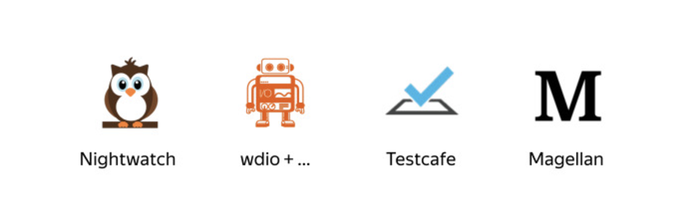
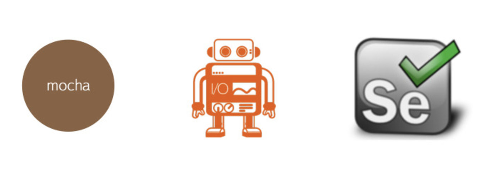

Автотесты
Тестирование пользовательских сценариев
Что потребуется знать
- Что такое пользовательский сценарий
- Синтаксис библиотеки
mocha
Проблема
Некоторый рабочий процесс
Даша - ручной тестировщик
- Agile-команда
- Взрослый и стабильный проект
- Релиз каждые 3 дня
- Перед релизом обязателен регресc
Составляющие регресса
- Тестовый набор из 60 кейсов
- С каждым выходом новой функциональности + N кейсов
- Проверка на популярных десктопных браузеров
- Проверка в браузерах на Android + iOS
Проблема
| Рабочий процесс | Регресс |
|---|---|
| Agile-команда | Тестовый набор из 60 кейсов |
| Взрослый и стабильный проект | Фича добавляет N кейсов |
| Релиз каждые 3 дня | Проверка на десктопах |
| Перед релизом регресc | Проверка на Android + iOS |
Как облегчить регресс?
| Воркфлоу | Регресс |
|---|---|
| Agile-команда | Тестовый набор из 60 кейсов |
| Взрослый и стабильный проект | Фича добавляет N кейсов |
| Релиз каждые 3 дня | Проверка на популярных десктопах |
| Перед релизом регресc | Проверка на Android + iOS |
Хорошие варианты
- Оптимизировать тестовый набор
- Чередовать браузеры при различных регрессах
- Проверять только то, что реально было затронуто + смоук
- Нанять еще тестировщика
- Отдать регресс на аутсорс
End-to-End тестирование
Интеграционные тесты, которые воздействуют на систему через ее внешние интерфейсы и проверяют ожидаемую реакцию системы через эти же интерфейсы
Что хотим получить?
Браузер сам «делает» действия согласно тест-кейсу
Стоит задуматься о E2E-тестах, если:
- Частые релизы + регрессы
- Критично проверять на многих браузерах
- Тестовый набор большой и расширяется
- Тесты содержат рутинные и долгие действия
- Проект относительно стабилен
E2E test runner
Фреймворк для написания
end-to-end тестов
E2E test runner
Составные части Hermione
Selenium
Изначально было 2 проекта
Selenium
- Набор инструментов, предназначенных для автоматизации браузеров на различных платформах
- Selenuim RC: Внедрял javascript-код в браузер при запуске и использовал его для управления веб-приложением
Webdriver
- Инструмент для управления браузером
- Напрямую вызывает команды браузера, используя родной для каждого конкретного браузера API
2008 год
- Слияние Selenium и Webdriver
- Проект стали назвать:
- Selenium 2.0
- Selenium Webdriver
- Webdriver
Программные решения Selenium
1. Интерфейсные решения
Умеют записывать действия в браузере в команды Selenium для повторного воспроизведения
Selenium IDE
Плагин для Firefox
Selenium IDE
Плагин для Firefox
- C версии Firefox 55 не поддерживается
- Есть альтернативы. Например: плагин Katalon Recorder
2. SELENIUM + Язык программирования (Javascript)
Популярные библиотеки
- selenium-webdriverjs ⭐ 10090 ️
- WD.js ⭐ 1282
- webdriverio ⭐ 3880
webdriverio

205 различных команд для управления браузером
Отличная документация
Составные части Hermione
Hermione. Быстрый старт
Репозиторийhermione. Установка
# Устанавливаем hermione
npm install hermione --save
Создаем в корне файл .hermione.conf.js
module.exports = {
sets: {
// путь до тестов
desktop: {
files: 'tests/desktop'
}
},
browsers: {
// определяем браузер
firefox: {
desiredCapabilities: {
browserName: 'firefox'
}
}
}
};
Пишем пробный тест
// test/desktops/example-1.js
var assert = require('assert');
describe('github', function() {
it('should find hermione', function() {
return this.browser
.url('https://github.com/gemini-testing/hermione')
.getText('#readme h1')
.then(function(title) {
assert.equal(title, 'Hermione')
});
});
});
Запуск
> hermione
✘ github should find hermione [firefox] - 42ms
Total: 1 Passed: 0 Failed: 1 Skipped: 0 Retries: 0
1) github should find hermione
in file tests/desktop/example-1.js
firefox
✘ Error: connect ECONNREFUSED 127.0.0.1:4444
Схема взаимодействия
Selenium grid
Центральный узел, который получает все запросы тестов и распределяет их по надлежащим узлам (браузерам).
Сервисы представляющие Selenium Grid
BrowserStack
- Регистрируемся и входим в аккаунт
- Переходим в Account → Settings
- Видим свой Access-Key в секции Automate
.hermione.conf.js
module.exports = {
sets: {
desktop: {
files: 'tests/desktop'
}
},
browsers: {
chrome: {
desiredCapabilities: {
browserName: 'firefox'
}
}
},
// ссылка на Selenium Grid
gridUrl: `http://USERNAME:ACCESSKEY
@hub-cloud.browserstack.com:80/wd/hub`
};
> hermione
✓ github should find hermione [firefox] - 6551ms
Total: 1 Passed: 1 Failed: 0 Skipped: 0 Retries: 0
Так делать не безопасно!
Правило: Секреты хранить в переменных окружения
.hermione.conf.js
module.exports = {
/* ... */
gridUrl: `http://${process.env.USERNAME}
:${process.env.ACCESSKEY}
@hub-cloud.browserstack.com:80/wd/hub`,
};
package.json
// package.json
"scripts": {
"test": "hermione"
}
# Запуск
USERNAME=username ACCESSKEY=accesskey npm test
> hermione
✓ github should find hermione [firefox] - 6551ms
Total: 1 Passed: 1 Failed: 0 Skipped: 0 Retries: 0
Облачный Selenium Grid
Есть браузеры различных версий
Платно
Сложно делать отладку
Нельзя тестировать localhost
Как запустить локально?
selenium-standalone
РепозиторийУстановка selenium-standalone
Установить JDK (Java Development Kit)
# Установка selenium-standalone
npm install selenium-standalone --save-dev
# Установка необходимых драйверов браузеров
./node_modules/.bin/selenium-standalone install
# Запуск сервера
./node_modules/.bin/selenium-standalone start
.hermione.conf.js
module.exports = {
sets: {
desktop: {
files: 'tests/desktop'
}
},
browsers: {
chrome: {
desiredCapabilities: {
browserName: 'firefox'
}
}
},
gridUrl: 'http://localhost:4444/wd/hub'
};
Пишем собственный e2e-тест
Тест-кейс
- Зайти на rasp.yandex.ru/trains
- Выбрать город прибытия
- Нажать кнопку «Узнать расписание и цены»
- Отсортировать по цене
ОР: Каждая последующая цена будет больше предыдущей
Тест
const assert = require('assert');
describe('Проверка страницы расписания поездов:', () => {
it('должны отображаться цены в порядке возрастания' +
'при сортировке по цене', async function() {
const browser = this.browser;
const url = 'https://rasp.yandex.ru/trains';
await browser.url(url);
const actualUrl = await browser.getUrl();
assert.equal(actualUrl, url);
/* ... */
});
});
Запуск
> hermione
✓ Проверка страницы расписания поездов: должны отображаться цены
в порядке возрастания при сортировке по цене [firefox] - 7491ms
Total: 1 Passed: 1 Failed: 0 Skipped: 0 Retries: 0
Тест
const assert = require('assert');
describe('Проверка страницы расписания поездов:', () => {
it('должны отображаться цены в порядке возрастания' +
'при сортировке по цене', async function() {
const browser = this.browser;
const url = 'https://rasp.yandex.ru/trains';
await browser.url(url);
await browser.setValue(???, 'Екатеринбург');
/* ... */
});
});
Как определить элемент на странице?
Селектор
цель, идентифицирующая элемент на странице веб-приложения
Виды селекторов в webdriverio
CSS Query Selector - #id
XPATH - //input[@id = 'to']
другие виды селекторовПоиск CSS-селектора
Ищем семантичное для элемента свойство (атрибут, класс и тп)
Проверяем уникальность функцией document.querySelectorAll
Тест
const assert = require('assert');
describe('Проверка страницы расписания поездов:', () => {
it('должны отображаться цены в порядке возрастания' +
'при сортировке по цене', async function() {
const browser = this.browser;
const url = 'https://rasp.yandex.ru/trains';
await browser.url(url);
await browser.setValue('#to', 'Екатеринбург');
/* ... */
});
});
Тест
const assert = require('assert');
describe('Проверка страницы расписания поездов:', () => {
it('должны отображаться цены в порядке возрастания' +
'при сортировке по цене', async function() {
const browser = this.browser;
const url = 'https://rasp.yandex.ru/trains';
await browser.url(url);
await browser.setValue('#to', 'Екатеринбург');
// клик по кнопке "Узнать расписание и цены"
await browser.click('.SearchForm__submit');
/* ... */
});
});
Тест
const assert = require('assert');
describe('Проверка страницы расписания поездов:', () => {
it('должны отображаться цены в порядке возрастания' +
'при сортировке по цене', async function() {
const browser = this.browser;
const url = 'https://rasp.yandex.ru/trains';
await browser.url(url);
await browser.setValue('#to', 'Екатеринбург');
await browser.click('.SearchForm__submit');
// клик по селекту типа сортировки
await browser.click('.SearchSorting__field');
/* ... */
});
});
Запуск
> hermione
✘ Проверка страницы расписания поездов: должны отображаться цены
в порядке возрастания при сортировке по цене [firefox] - 4492ms
Total: 1 Passed: 0 Failed: 1 Skipped: 0 Retries: 0
1) Проверка страницы расписания поездов: должны отображаться цены
в порядке возрастания при сортировке по цене
in file tests/desktop/first.js
firefox
✘ Error: An element could not be located on the page using
the given search parameters.

Тест
const assert = require('assert');
describe('Проверка страницы расписания поездов:', () => {
it('должны отображаться цены в порядке возрастания' +
'при сортировке по цене', async function() {
const browser = this.browser;
const url = 'https://rasp.yandex.ru/trains';
await browser.url(url);
await browser.setValue('#to', 'Екатеринбург');
await browser.click('.SearchForm__submit');
// ожидаем, что загрузочная анимация пропадет
await browser.waitForVisible('.Overlay__container',
5000, true);
await browser.click('.SearchSorting__field button');
/* ... */
});
});
Тест
const assert = require('assert');
describe('Проверка страницы расписания поездов:', () => {
it('должны отображаться цены в порядке возрастания' +
'при сортировке по цене', async function() {
const browser = this.browser;
const url = 'https://rasp.yandex.ru/trains';
await browser.url(url);
await browser.setValue('#to', 'Екатеринбург');
await browser.click('.SearchForm__submit');
await browser.waitForVisible('.Overlay__container',
5000, true);
await browser.click('.SearchSorting__field button');
await browser.waitForVisible('[data-value=price]',
1000);
await browser.click('[data-value=price]');
/* ... */
});
});
Тест
const assert = require('assert');
describe('Проверка страницы расписания поездов:', () => {
it('должны отображаться цены в порядке возрастания' +
'при сортировке по цене', async function() {
const browser = this.browser;
const url = 'https://rasp.yandex.ru/trains';
await browser.url(url);
await browser.setValue('#to', 'Екатеринбург');
await browser.click('.SearchForm__submit');
await browser.waitForVisible('.Overlay__container',
5000, true);
await browser.click('.SearchSorting__field button');
await browser.waitForVisible('[data-value=price]',
2000);
await browser.click('[data-value=price]');
const prices = await browser
.getText('.TariffsListItem__price');
checkPrices(prices);
});
});
checkPrices
function checkPrices(prices) {
let prev = 0;
prices.forEach(price => {
let curPrice = Number(price.replace(/\D+/g, ''));
assert(curPrice >= prev, 'Каждая последующая цена' +
'должна быть больше предыдущей');
prev = curPrice;
})
}
Первый кейс автоматизирован
- 8 строк-команд + функция проверки цен
- Время прогона: 8 секунд
Проблема
Во многих тестах используется проверка:
browser.waitForVisible('.Overlay__container', 5000, true);
Если селектор экрана загрузки поменяется - придется переписывать все тесты
Как избежать?
Паттерн Page Object
Разделение кода тестов и описания страниц
page-object.js
//page-object.js
module.exports = {
overlay: {
container: '.Overlay__container'
}
};
Тест
const PO = require('../../page-object');
/* ... */
await browser.waitForVisible(PO.overlay.container, 5000, true);
/* ... */
Как может выглядеть конфиг
hermione.conf.js.
module.exports = {
browsers: {
chrome: {
desiredCapabilities: {
browserName: 'chrome',
version: '59.0'
},
// сколько параллельно тестов будет проходить
sessionsPerBrowser: 2,
windowSize: '1440x1000'
},
firefox: {
desiredCapabilities: {
browserName: 'firefox'
}
}
},
sets: [{
files: ['tests/desktop'],
// в каких браузерах запустить тесты
browsers: ['chrome', 'firefox']
}],
// количество повторных попыток тестов
retry: 1
};
Возможная структура тестов
tests
├── desktop
│ ├── desktop-1.js
│ ├── desktop-2.js
│ ├── desktop-3.js
│ └── ...
└── touch
├── touch-1.js
├── touch-2.js
├── touch-3.js
└── ...
Инцидент
Пропустили дефект в проде, хотя все автотесты проходили
Проблема
При «сломанной» верстке тесты проходят
Как можно решить?
Тестирование скриншотами
hermione. assertView
assertView. Аргументы
- state – описание состояния снимаемого элемента
- selector – элемент, скриншот которого необходимо снять
Тест
describe('Проверка страницы расписания поездов:', () => {
it('должен отображаться футер', async function() {
const browser = this.browser;
const url = 'https://rasp.yandex.ru/trains';
await browser.url(url);
await browser.assertView('plain',
'.LandingFooter');
});
});
Запуск
> hermione
Проверка страницы расписания поездов: должен отображаться футер
[firefox] - 4616ms
Total: 1 Passed: 0 Failed: 1 Skipped: 0 Retries: 0
1) Проверка страницы расписания поездов: должен отображаться футер
in file tests/desktop/first.js
firefox
✘ NoRefImageError: can not find reference image at
/screens/d8fae21/firefox/plain.png for "plain" state.
.hermione.conf.js.
const path = require('path');
module.exports = {
sets: {
desktop: {
files: 'tests/desktop'
}
},
browsers: {
firefox: {
desiredCapabilities: {
browserName: 'firefox'
}
}
},
screenshotsDir: test => path.join(path.dirname(test.file),
'screens', test.id(), test.browserId),
};
Снятие эталонных скриншотов
hermione --update-refs
Через год тест не пройдет
assertView. Аргументы
- state – описание состояния снимаемого элемента
- selector – элемент, скриншот которого необходимо снять
- opts: ignoreElements – элементы, которые необходимо игнорировать (закрасить в черный цвет) при снятии скриншота.
Тест
describe('Проверка страницы расписания поездов:', () => {
it('должен отображаться футер', async function() {
const browser = this.browser;
const url = 'https://rasp.yandex.ru/trains';
await browser.url(url);
await browser.assertView('plain',
'.LandingFooter', {
ignoreElements: [
'.Footer__copyright'
]
});
});
});
> hermione
✓ Проверка страницы расписания поездов:
должен отображаться футер [firefox] - 7491ms
Total: 1 Passed: 1 Failed: 0 Skipped: 0 Retries: 0
Итоги
Рабочий процесс Даши до
написание кейсов → тестирование новых фич → регресс
Рабочий процесс Даши ПОСЛЕ
написание кейсов → тестирование новых фич → написание новых тестов → запуск и наблюдение